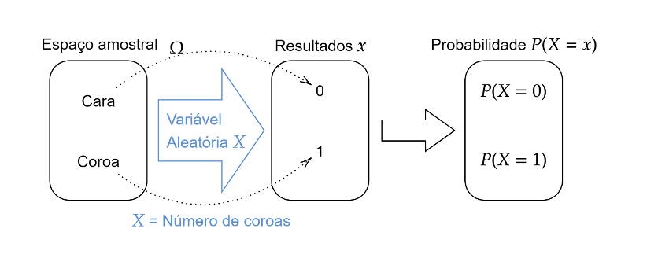
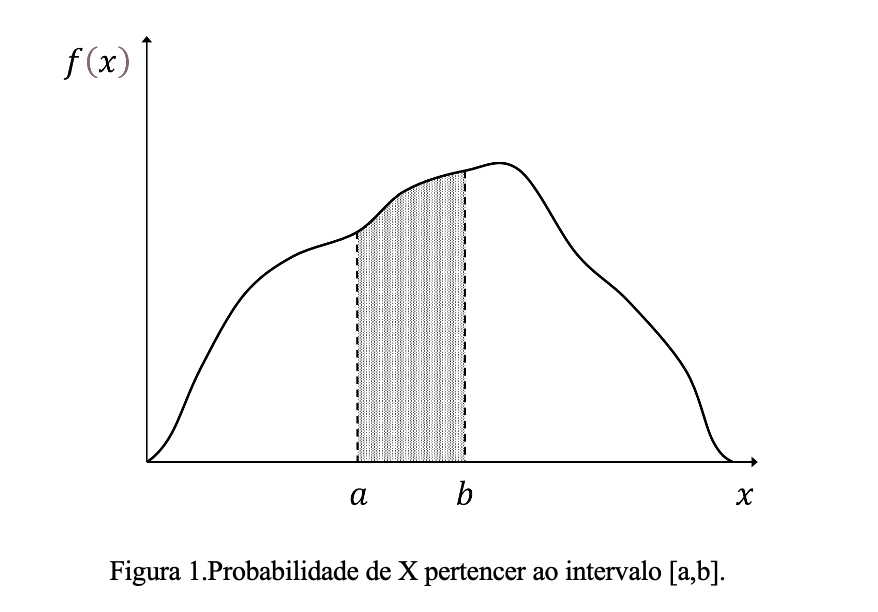
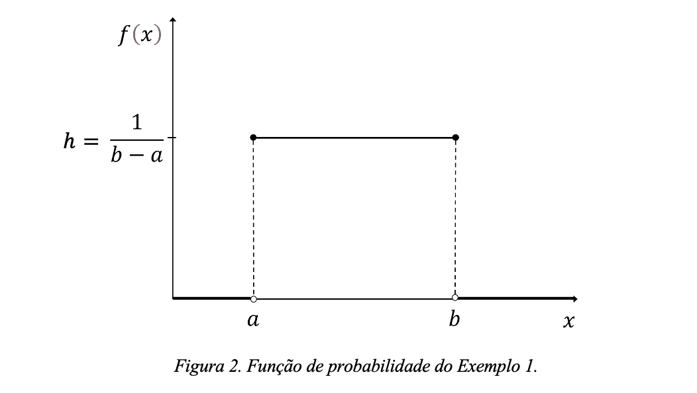
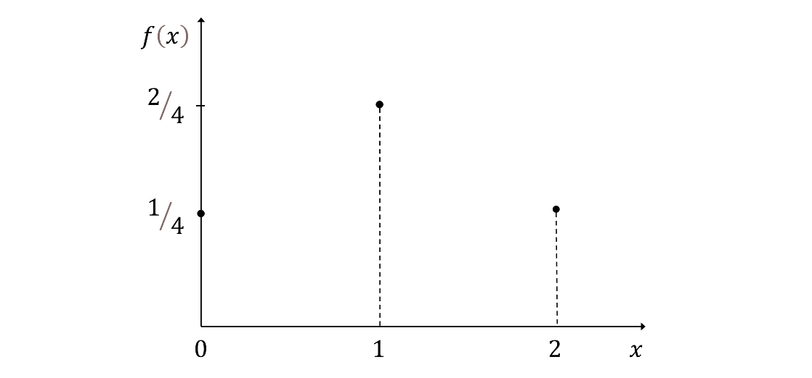
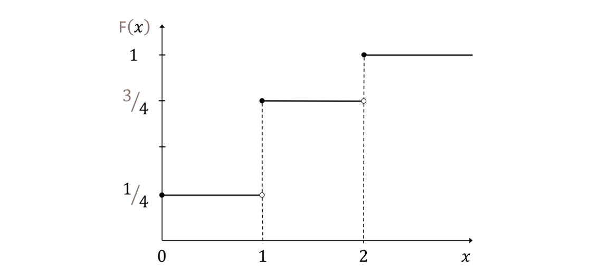
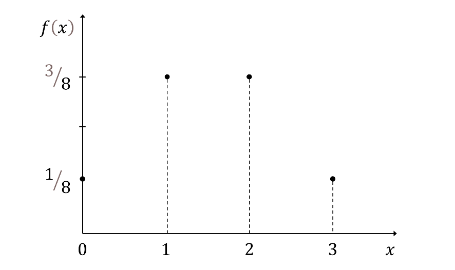
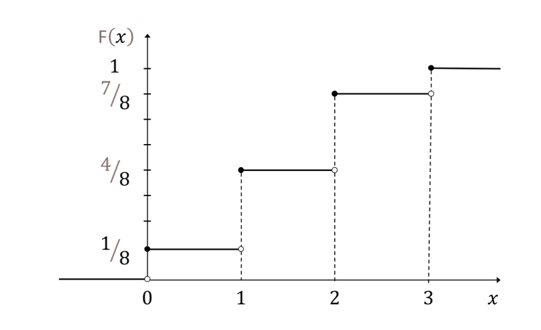
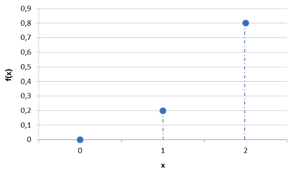
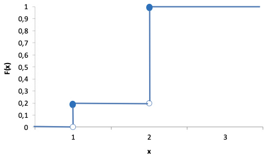

5 Aula 03
- Aula 3: Probabilidade Condicionada e Independência
- Prof. Dr. Carlos Enrique Carrasco Gutierrez
- E-mail: carlos.carrasco.gutierrez@gmail.com
5.1 Variáveis aleatórias
5.1.1 Variável Aleatória
Para facilitar o cálculo da probabilidade de um evento, é conveniente trabalhar com valores numéricos associados aos eventos aleatórios. Dessa forma, muitas vezes é mais interessante atribuir um número a um evento aleatório.
5.1.2 Definição (variável aleatória)
Considere o espaço de probabilidade (\(\Omega, \mathcal{F}, P\)), onde \(\Omega\) é o espaço amostral, \(\mathcal{F}\) é a \(\sigma\)-álgebra de subconjuntos de \(\Omega\), e \(P\) é a medida de probabilidade. Uma variável aleatória é uma função que associa um único número real a cada elemento do espaço amostral:
\(X: \Omega \rightarrow \mathbb{R}\)
Formalmente, para algum evento \(E\) em \(\Omega\) satisfaz \(E=X^{-1} (I) = \{\omega \in \Omega : X(\omega) \in I\} \in \mathcal{F}\), para todo intervalo \(I \subset \mathbb{R}\). Em outras palavras, a imagem inversa de intervalos (\(I \subset \mathbb{R}\)) pertence a \(\mathcal{F}\).
Notação:
\(X\) (maiúscula) = variável aleatória
\(x\) (minúscula) = valor numérico da variável aleatória
\(\omega\) = resultado ou elemento do espaço amostral
Exemplo 1: Lançamento de uma Moeda
Considere o experimento de lançar uma moeda. Ao analisarmos o espaço amostral do experimento, observamos que existem dois resultados possíveis: \(\omega_1=\text{cara}\) e \(\omega_2=\text{coroa}\), assim:
\(\Omega=\{\omega_1, \omega_2\}=\{\text{cara, coroa}\}\)
Vamos definir a variável aleatória \(X\) da seguinte forma:
\(X: \text{Número de coroas}\)
\(X(\omega_1)=X(\text{cara})=0, \text{ se o evento for \{cara\}}\)
\(X(\omega_2)=X(\text{coroa})=1, \text{ se o evento for \{coroa\}}\)
Ao invés de utilizar eventos para calcular as probabilidades, agora utilizaremos a variável aleatória \(X\), que assume valores na reta. Isso facilitará o cálculo das probabilidades. Podemos então calcular a probabilidade de sair cara como \(P(\{\text{cara}\})=P(X=0)\).
A figura a seguir apresenta esta situação:

Exemplo 2: Lançamento de uma Moeda Duas Vezes
Considere o experimento de lançar uma moeda duas vezes, onde definimos \(H\) com cara e \(T\) como coroa. O espaço amostral será composto pelos eventos simples \(\Omega=\{\omega_1, \omega_2, \omega_3, \omega_4\}=\{\text{HH, HT, TH, TT}\}\).
Definamos duas variáveis aleatórias:
\(X =\) número de caras ao final do experimento;
\(Y =\) número de cara na primeira jogada menos o número de coroas na segunda jogada.
Encontre os valores das variáveis aleatórias \(X\) e \(Y\).
Solução:
Para cada resultado \(\omega_i \in \Omega\), \(i=1,2,3,4\), a variável aleatória \(X\) transformará um elemento de \(\Omega\) em um valor real.
Para \(X\):
\(X(\omega_1)=X(\text{HH})=2\)
\(X(\omega_2)=X(\text{HT})=1\)
\(X(\omega_3)=X(\text{TH})=1\)
\(X(\omega_4)=X(\text{TT})=0\)
Portanto, \(X=\{0,1,2\}\).
Para \(Y\):
\(Y(\omega_1)=Y(\text{HH})=2-0=2\)
\(Y(\omega_2)=Y(\text{HT})=1-1=0\)
\(Y(\omega_3)=Y(\text{TH})=1-1=0\)
\(Y(\omega_4)=Y(\text{TT})=0-1=-1\), e
\(Y=\{-1,0,1\}\).
5.1.3 Classificação:
Podemos classificar as variáveis aleatórias como discreta ou contínua:
Variável Aleatória Discreta:
Uma variável aleatória é considerada discreta quando seus possíveis valores podem ser um número finito ou enumerável (infinito, mas contável) de valores.
Exemplo 3:
\(X\) pode assumir valores finitos, como \(\{1, 2, 3, 4, 5, 6\}\).
\(X\) pode assumir valores enumeráveis, como \(\{0, 1, 2, 3, 4, 5, \ldots\}\).
\(X\) pode assumir valores fracionários enumeráveis, como \(\{1/2, 1/4, 1/8, \ldots\}\).
Variáveis Aleatórias Contínuas:
Uma variável aleatória é considerada contínua quando pode assumir qualquer valor em um intervalo da reta real, ou seja, possui um conjunto infinito e não enumerável de valores possíveis.
Exemplo 4:
\(Y\) pode assumir qualquer valor em um intervalo, como \(0 \leq Y \leq 1\).
\(Z\) pode assumir valores em um intervalo não enumerável, como \(Z \in (-\infty, \infty)\).
Notação:
“v.a” indica “variável aleatória”
“v.a.d” indica “variável aleatória discreta”
“v.a.c” indica “variável aleatória contínua”
Outros exemplos de variáveis aleatórias discretas:
\(X\): Número de alunos que passaram em um exame.
- Possíveis valores: \(\{0, 1, 2, 3, \ldots\}\)
\(Y\): Número de carros em um estacionamento.
- Possíveis valores: \(\{0, 1, 2, 3, \ldots\}\)
\(Z\): Número de peças defeituosas em um lote de produção.
- Possíveis valores: \(\{0, 1, 2, \ldots\}\)
Outros exemplos de Variáveis aleatórias contínuas:
\(X\): altura de uma pessoa
- Possíveis valores: \(X > 0\)
\(Y\): peso de uma pessoa
- Possíveis valores: \(Y > 0\)
\(Z\): preço de um ativo financeiro
- Possíveis valores: \(Z > 0\)
Esses exemplos ilustram a distinção entre variáveis aleatórias discretas e contínuas, destacando que as primeiras assumem valores distintos e contáveis, enquanto as segundas podem assumir qualquer valor em um intervalo contínuo.
5.2 Função de distribuição
A função de distribuição \(F: \mathbb{R} \rightarrow [0,1]\) é definida pela relação:
\(F(x_0) = P(X \leq x_0) = P(\{\omega \in \Omega : X(\omega) \leq x_0\})\)
onde o conjunto \(\{X \leq x_0\}\) na dimensão de \(\mathbb{R}\) é equivalente ao evento \(\{\omega \in \Omega : X(\omega) \leq x_0\}\).
Essa igualdade descreve os resultados nos quais a desigualdade é satisfeita. É relevante notar que esta definição é aplicável tanto para variáveis aleatórias discretas quanto contínuas.
Definição:
Considerando a variável aleatória \(X\), que pode ser discreta ou contínua, a função de distribuição acumulada, denotada por \(F(x)\), é definida como segue:
\(F(x_0) = P(X \leq x_0)\), onde \(x_0\) representa o valor específico da variável aleatória.
Exemplo:
Considere o experimento de jogar uma moeda duas vezes, onde \(H\) é cara e \(T\) é coroa. Defina a variável aleatória como \(X\): número de caras em duas jogadas.
Encontre o espaço amostral do experimento;
Para a variável aleatória definida, encontre os valores que ela pode tomar;
Encontre a função de distribuição de \(X\).
Solução:
Identificamos que a variável aleatória \(X\) é do tipo discreto.
a) O espaço amostral é: \(\Omega = \{\omega_1, \omega_2, \omega_3, \omega_4\} = \{HH, HT, TH, TT\}\)
b) A variável aleatória \(X\) transforma cada resultado \(\omega \in \mathbb{R}\), do espaço amostral \(\Omega\) em um valor real. \(X =\) número de caras em duas jogadas.
A variável aleatória assim definida transforma cada resultado em um número real.
\(X(HH) = 2\)
\(X(HT) = X(TH) = 1\)
\(X(TT) = 0\)
Os valores que a variável aleatória pode tomar são: \(X = \{0, 1, 2\}\)
c) Para construir a função distribuição, precisamos conhecer os intervalos da forma \(\{X \leq x_0\} = \{\omega \in \Omega | X(\omega) \leq x_0\}\).
Para os valores:
Para \(x_0=0\), o intervalo \(\{X \leq 0\}\) relaciona o evento: \(\{X \leq x_0\} = \{X \leq 0\} = \{\omega \in \Omega : X(\omega) \leq 0\} = \{ {\underbrace{TT}_{X=0}} \}\)
Para \(x_0=1\), o intervalo \(\{X \leq 1\}\) relaciona os eventos: \(\{X \leq x_0\} = \{X \leq 1\} = \{\omega \in \Omega : X(\omega) \leq 1\} =\{ {\underbrace{HT,TH}_{X=1}}, {\underbrace{TT}_{X=0}}\}\)
Para \(x_0=2\), o intervalo \(\{X \leq 2\}\) relaciona os eventos: \(\{X \leq x_0\} = \{X \leq 2\} =\)
\(\{\omega \in \Omega : X(\omega) \leq 2\} = \{ {\underbrace{HH}_{X=2}}, {\underbrace{HT,TH}_{X=1}}, {\underbrace{TT}_{X=0}}\}\)
5.3 Tabela da distribuição:
| X | F(x) | P(X \(\leq\) x) | P(\(\omega \in \Omega | X(\omega) \leq 0\)) | Valor |
|---|---|---|---|---|
| 0 | F(0) | P(X \(\leq\) 0) | P({TT}) = P(X \(\leq\) 0) = P({TT}) | 0.25 |
| 1 | F(1) | P(X \(\leq\) 1) | P({HT,TH,TT}) = P({HT} \(\cup\) {TH} \(\cup\) {TT}) = P({HT}) + P({TH}) + P({TT}) = 0.25 + 0.25 + 0.25 | 0.75 |
| 2 | F(2) | P(X \(\leq\) 2) | P({HH,HT,TH,TT}) = P({HH} \(\cup\) {HT} \(\cup\) {TH} \(\cup\) P{TT}) = P({HH}) + P({HT}) + P({TH}) + P({TT}) = 0.25 + 0.25 + 0.25 + 0.25 | 1 |
Resumindo:
| X | F(x) |
|---|---|
| 0 | 0.25 |
| 1 | 0.75 |
| 2 | 1 |
5.3.1 Exemplo:
No exemplo acima, encontre:
a) F(3)
b) F(0.5)
c) F(1.5)
d) F(-10)
Solução:
a) \(F(3) = P(X \leq 3) = P({HH,HT,TH,TT}) = 1\)
b) \(F(0.5) = P(X \leq 0.5) = P({TT}) = 0.25\)
c) \(F(1.5) = P(X \leq 1.5) = P(X \leq 1) = P({HT,TH,TT}) = 0.75\)
d) \(F(-10) = P(X \leq -10) = P(\{\emptyset\}) = 0\)
5.4 Propriedades das funções de distribuição F(x).
a) \(\lim_{{x \to -\infty}} F(x) = 0\); e \(\lim_{{x \to +\infty}} F(x) = 1\)
b) Se \(x < y\) então \(F(x) \leq F(y)\);
c) \(F\) é contínua à direita, ou seja, \(F(x+h)\), quando \(h \to 0\), é igual a \(F(x)\).
Definição de continuidade à direita e esquerda:
\(F(x_-) \neq F(x)\), isto é, \(F\) é descontínua à esquerda.
\(F(x_+) = F(x)\), isto é, \(F\) é contínua à direita.
Essas propriedades são essenciais para entender o comportamento e as características das funções de distribuição acumulada. Elas garantem que a função \(F\) seja não decrescente, limitada nos extremos e contínua à direita. A continuidade à direita é particularmente importante, pois significa que a probabilidade acumulada não salta de um valor para outro, tornando a função mais suave e interpretável.
5.5 Função Probabilidade e Função Densidade de Probabilidade:
A função de probabilidade é definida para uma variável aleatória discreta, enquanto a função densidade de probabilidade é utilizada para uma variável aleatória contínua. No entanto, em muitos textos, o termo “função densidade” é utilizado para ambas as situações.
5.5.1 Função de Probabilidade:
Para uma variável aleatória discreta \(X\), definimos a função probabilidade \(f(x)\). Essa função associa a cada valor possível da variável aleatória uma probabilidade.
Definição:
A função de probabilidade de uma variável aleatória discreta \(X\) é definida como:
\(f(x_i) = P(X = x_i) \quad \text{para todo} \ x_i\)
Ou simplesmente:
\(f(x) = P(X = x)\)
A função \(f(x)\) é chamada função probabilidade da variável aleatória \(X\), e nesse contexto, dizemos que \(X\) é uma variável aleatória discreta.
Notas:
- A função de probabilidade é conhecida também como função massa de probabilidade (fmp). Às vezes, para facilitar a comunicação, utilizamos o termo “função densidade de probabilidade” (fdp), como também é chamado no caso contínuo.
Propriedades da função probabilidade:
- \(0 \leq f(x_i) \quad \text{para todo}\) \(x_i\);
- \(\sum_{i=1}^n f(x_i) = f(x_1) + f(x_2) + \ldots + f(x_n) = 1\)
Pela definição \(f(x_i) = P(X = x_i)\), a propriedade (ii) pode também ser representada como:
\(f(x_1) + f(x_2) + \ldots + f(x_n)\) = \(P(X = x_1) + P(X = x_2) + \ldots + P(X = x_n) = 1\),
onde \(n\) é o número de valores que a variável aleatória toma. A função é uma probabilidade e, portanto, é sempre positiva e menor que um.
5.6 Função densidade de probabilidade (fdp)
Seja \(X\) uma variável aleatória contínua. A função densidade de probabilidade (fdp) de \(X\) é representada pela função \(f(x)\) tal que, para quaisquer dois números \(a\) e \(b\) com \(a \leq b\):
\(P(a \leq X \leq b) = P(a < X < b) = \int_a^b f(x) \, dx\)
A probabilidade de \(X\) pertencer ao intervalo \([a,b]\) é a área acima desse intervalo e abaixo do gráfico da função densidade, como ilustrado na Figura 1.

5.6.1 Propriedades da função densidade (fdp)
1. \(f(x) > 0\): A função densidade de probabilidade é sempre positiva.
2. \(\int_{-\infty}^{\infty} f(x) \, dx = 1\): A área total sob o gráfico da função densidade é igual a um.
Observação:
Para a variável aleatória contínua, não é verdade a seguinte relação \(f(a) = P(X = a)\). Observe que, para a variável aleatória contínua, \(P(X = a) = 0\). No entanto, o valor de \(f(a)\) existe (ver Figura 1).
Lembrando da definição de função distribuição:
\(F(a) = P(X \leq a) = \int_{-\infty}^a f(x) \, dx\)
5.7 Exercícios
1) Para uma variável aleatória contínua, verifique a relação: \(f(x) = \frac{dF(x)}{dx}\).
Para uma variável aleatória contínua, temos a relação entre a função densidade de probabilidade \(f(x)\) e a função distribuição acumulada \(F(x)\) dada por:
\(f(x) = \frac{dF(x)}{dx}\)
Essa relação expressa que a função densidade de probabilidade é a derivada da função distribuição acumulada.
2) Verificação da Relação Integral:
Além disso, para uma variável aleatória contínua, a probabilidade de \(X\) estar no intervalo \([a,b]\) pode ser calculada pela integral da função densidade de probabilidade:
\(\int_a^b f(x) \, dx = F(b) - F(a) = P(X \leq b) - P(X \leq a)\)
Essa relação mostra que a integral da função densidade de probabilidade sobre um intervalo é igual à diferença entre os valores da função distribuição acumulada nos limites do intervalo.
Observações:
1) Probabilidade de Intervalos:
Para uma variável aleatória contínua \(X\), a probabilidade de \(a < X \leq b\) é igual à probabilidade de \(a < X < b\) porque a probabilidade de \(X\) ser igual a um valor específico é zero, \(P(X = b) = 0\). Portanto, temos:
\(P(a < X \leq b) = P(a < X < b) + P(X = b)\) \(P(a < X \leq b) = P(a < X < b) + 0 = P(a < X < b)\)
Isso ocorre porque, para uma variável aleatória contínua, a probabilidade de um ponto específico é infinitesimal, isto é, o valor aproxima-se de zero.
2) Cálculo da Probabilidade:
Assim, podemos calcular a probabilidade de \(a < X < b\) de várias formas equivalentes:
\(P(a < X < b) = P(a < X \leq b) = P(a \leq X < b)\) \(= P(a \leq X \leq b) = \int_a^b f(x) \, dx = F(b) - F(a)\)
Essas expressões são todas equivalentes devido à definição da função de distribuição acumulada \(F(x)\). Aplicando essas definições para \(a\) e \(b\) temos:
- \(F(a) = P(X \leq a)\)
- \(F(b) = P(X \leq b)\)
5.8 Função Probabilidade vs. Função Densidade de Probabilidade:
A diferença fundamental entre a função probabilidade e a função densidade de probabilidade é destacada pela natureza das variáveis aleatórias contínuas e discretas. Vamos considerar um exemplo para ilustrar essa distinção:
5.8.1 Exemplo 1
Considere dois casos:
a) \(X\) é uma variável aleatória contínua que toma valores no intervalo \([1,3]\).
b) \(X\) é uma variável aleatória discreta que toma valores {1,2,3}.
Encontrar \(P(1 \leq X < 3)\) em função da Função Probabilidade e Função Densidade de Probabilidade, respectivamente.
Solução:
a) Variável Aleatória Contínua (X contínuo):
\(P(1 \leq X < 3) = F(3) - F(1) = \int_{1}^3 f(x) \, dx\)
b) Variável Aleatória Discreta (X discreto):
\(P(1 \leq X < 3) = \underbrace{P(X = 1)}_{f(1)} + \underbrace{P(X = 2)}_{f(2)} = f(1) + f(2)\)
Exemplo:
Considere uma variável aleatória uniforme no intervalo \([a,b]\), ou seja, \(x \sim \text{uniforme}(a,b)\), com \(a\) e \(b\) estritamente positivos e conhecidos. Encontre \(f(x)\) e \(F(x)\).
Solução:
Cálculo de \(f(x)\):
\(f(x) = C, \quad \text{para o intervalo de} \ (a,b)\)

Área = 1 = \((b-a) \cdot h\)
\(h = \frac{1}{b-a}\)
Logo a função \(f(x)\) tem que satisfazer as propriedades:
i) \(f(x) > 0\) ii) \(\int_{-\infty}^{\infty} f(x) \, dx = 1\)
\(f(x) = h = \frac{1}{b-a}\)
Cálculo de \(F(x)\)
\(F(x) = P(X \leq x)\)
Para \(a < x_0 < b\) temos:
\(F(x_0) = P(X \leq x_0) = \int_a^{x_0} f(x) \, dx = \int_a^{x_0} \frac{1}{b-a} \, dx =\)
\(=\frac{1}{b-a} \int_a^{x_0} 1 \, dx = \frac{1}{b-a} (x \big|_a^{x_0})\)
\(=\frac{1}{b-a}(x_0-a) = \frac{x_0 - a}{b - a}\)
Logo,
\(F(x_0) = \frac{x_0 - a}{b - a}\)
5.9 Como se relaciona \(f(x)\) com \(F(x)\)
5.9.1 Variável aleatória discreta
Para uma variável aleatória discreta \(X\), temos:
\(F(x_0) = P(X \leq x_0) = \sum_{x_i \leq x_0} P(X = x_i) = \sum_{x_i \leq x_0} f(x_i)\)
5.9.2 Variável aleatória contínua
A função de probabilidade associada a uma distribuição contínua pode ser expressa por:
\(F(x_0) = P(X \leq x_0) = \int_{-\infty}^{x_0} f(x) \, dx, \quad x_0 \in \mathbb{R}\)
tal que \(f(x)\) é uma função integrável, chamada função densidade de probabilidade (fdp) de \(X\), com \(f \colon \mathbb{R} \to [0, +\infty)\). E também:
\(f(x) = \frac{dF(x)}{dx}\)
Exemplo 1:
Resolução:
a) O espaço amostral é definido da seguinte forma:
\[\Omega = \{(cc); (cr); (rc); (rr)\}\]
Definimos \(X\) como o número de caras.
\[\Omega = \{(cc); (cr); (rc); (rr)\}\]
Para \(x=0\) temos o resultado \(rr\).
Para \(x=1\) temos os resultados \(cr\) e \(rc\).
Para \(x=2\) temos o resultado \(cc\).
Logo \(X\) assume os valores:
\(X = \{0, 1, 2\}\)
\(\begin{array}{\|c\|c\|c\|} \hline X & \text{Evento Correspondente} & P(X=x) \\ \hline 0 & A_1=\{(rr)\} & P(X=0) = \frac{1}{4} \\ 1 & A_2=\{(cr), (rc)\} & P(X=1) = \frac{2}{4} \\ 2 & A_3=\{(cc)\} & P(X=2) = \frac{1}{4} \\ \hline \end{array}\)
Considerando que as moedas são “justas”, temos:
\(P(A_1) = P(\{(r, r)\}) = \frac{1}{4} \implies P(X=0) = \frac{1}{4}\)
\(P(A_2) = P(\{(c, r), (r, c)\}) = \frac{2}{4} \implies P(X=1) = \frac{2}{4}\)
\(P(A_3) = P(\{(c, c)\}) = \frac{1}{4} \implies P(X=2) = \frac{1}{4}\)
Podemos também associar, às probabilidades de \(X\) assumir valores, às probabilidades dos eventos correspondentes:
\(P(X=0) = P(A_1) = \frac{1}{4}\)
\(P(X=1) = P(A_2) = \frac{2}{4}\)
\(P(X=2) = P(A_3) = \frac{1}{4}\)
b) Da definição da função de probabilidade \(f(x) = P(X=x)\) e função de distribuição \(F(x) = P(X\leq x)\) elaboramos o seguinte quadro.
| v.a.d | Função probabilidade | Função distribuição |
|---|---|---|
| X=0 | \(f(0) = P(X=0) = \frac{1}{4}\) | \(F(0) = P(X\leq 0) = P(X=0) = \frac{1}{4}\) |
| X=1 | \(f(1) = P(X=1) = \frac{2}{4}\) | \(F(1) = P(X\leq 1) = P(X=0) + P(X=1) = \frac{1}{4} + \frac{2}{4} = \frac{3}{4}\) |
| X=2 | \(f(2) = P(X=2) = \frac{1}{4}\) | \(F(2) = P(X\leq 2) = P(X=0) + P(X=1) + P(X=2) = \frac{1}{4} + \frac{2}{4} + \frac{1}{4} = 1\) |
d) Gráficos de \(f(x)\) e \(F(x)\):

Elaboramos o gráfico da função distribuição \(F(x)\) por intervalos. Encontre o valor da função em:
\(F(0) = P(X\leq 0) = P(X=0) = \frac{1}{4}\)
\(F(1) = P(X\leq 1) = \frac{3}{4}\)
\(F(2) = P(X\leq 2) = 1\)
Quanto vale?
\(F(0,5) = P(X\leq 0,5) = P(X=0) = \frac{1}{4}\)
Quanto vale?
\(F(0,9999999999..) = P(X\leq 0,9999999999..) = P(X=0) = \frac{1}{4}\)
Quanto vale?
\(F(1,5) = P(X\leq 1,5) = P(X=0) + P(X=1) = \frac{3}{4}\)

\(F(3) = P(X\leq 3) = P(X=0) + P(X=1) + P(X=2) = 1\)
5.10 Exemplo 2:
5.10.1 Solução:
Para o caso discreto, \(F(x)\) será o somatório das funções de probabilidade \(f(x_0)\). No exemplo de jogar duas moedas simultaneamente e \(X\) definido como:
\(X = \text{número de caras em duas jogadas}\)
Encontre \(F(2)\).
Para este exemplo, identificamos que \(X\) é uma v.a.d com valores \(X = \{0, 1, 2\}\).
Para \(x_0=2\) temos:
\(F(2) = P(X\leq 2) = \sum_{x_i\leq 2} P(X=x_i) =\)
\(= P(X=0) + P(X=1) + P(X=2) =\)
\(= f(0) + f(1) + f(2) = 1\)
Calculando \(f(0)\), \(f(1)\) e \(f(2)\):
\(f(0) = P(X=0) = P(TT) = 0,25\)
\(f(1) = P(X=1) = P(TH) + P(HT) = 0,5\)
\(f(2) = P(X=2) = P(HH) = 0,25\)
Podemos agora terminar o cálculo de \(F(2)\):
\(F(2) = P(X\leq 2) = \sum\_{x_i\leq 2} f(0) + f(1) + f(2) =\)
\(F(2) = 0,25 + 0,5 + 0,25 = 1\)
5.11 Exemplo 3 (estudar em casa):
5.11.1 Resolução:
a$O espaço amostral é definido da seguinte forma:
\(\Omega = \{(c, c, c), (c, c, r), (c, r, c), (c, r, r), (r, c, c), (r, c, r), (r, r, c), (r, r, r)\}\)
Como \(X\) é o número de caras, assume valores:
\(X = \{0, 1, 2, 3\}\)
\(n = 4\)
\[\begin{array}{\|c\|c\|} \hline X & \text{Evento Correspondente} \\ \hline 0 & A_1 = \{(r, r, r)\} \\ 1 & A_2 = \{(c, r, r), (r, c, r), (r, r, c)\} \\ 2 & A_3 = \{(c, c, r), (c, r, c), (r, c, c)\} \\ 3 & A_4 = \{(c, c, c)\} \\ \hline \end{array}\]Considerando que as moedas são “justas”, temos:
\(P(\{(r, r, r)\}) = P(\{(c, r, r)\}) = P(\{(r, c, r)\}) =\) \(= P(\{(r, r, c)\}) = P(\{(c, c, r)\}) = P(\{(c, r, c)\}) =\) \(= P(\{(r, c, c)\}) = P(\{(c, c, c)\}) = \frac{1}{8}\)
Assim, as probabilidades para os eventos são:
\(P(A_1) = P(\{(r, r, r)\}) = \frac{1}{8}\)
\(P(A_2) = P(\{(c, r, r), (r, c, r), (r, r, c)\}) \to\)
\(P(A_2) = P(\{(c, r, r)\}) + P(\{(r, c, r)\}) + P(\{(r, r, c)\}) \to\)
\(P(A_2) = \frac{1}{8} + \frac{1}{8} + \frac{1}{8} = \frac{3}{8}\)
\(P(A_3) = P(\{(c, c, c)\}) = \frac{1}{8}\)
Podemos também associar, às probabilidades de \(X\) assumir valores, às probabilidades dos eventos correspondentes:
\(P(X=0) = P(A_1) = \frac{1}{8}\)
\(P(X=1) = P(A_2) = \frac{3}{8}\)
\(P(X=2) = P(A_3) = \frac{3}{8}\)
\(P(X=3) = P(A_4) = \frac{1}{8}\)
\(\begin{array}{\|c\|c\|c\|} \hline x & f(x) = P(X=x) & F(x) = P(X\leq x) \\ \hline 0 & \frac{1}{8} & \frac{1}{8} \\ 1 & \frac{3}{8} & \frac{1}{8} + \frac{3}{8} = \frac{4}{8} \\ 2 & \frac{3}{8} & \frac{1}{8} + \frac{3}{8} + \frac{3}{8} = \frac{7}{8} \\ 3 & \frac{1}{8} & \frac{1}{8} + \frac{3}{8} + \frac{3}{8} + \frac{1}{8} = 1 \\ \hline \end{array}\)


Exemplo 4
Resolução:
Para \(x=0\), temos: \(f(0) = P(X=0) = k0^2 = 0\)
Para \(x=1\), temos: \(f(1) = P(X=1) = k1^2 = k\)
Para \(x=2\), temos: \(f(2) = P(X=2) = k2^2 = 4k\)
Considerando que a função de probabilidade para uma variável aleatória discreta está definida como \(f(x) = P(X=x)\), logo, para o conjunto \(\{x_1, x_2, x_3\} = \{0, 1, 2\}\), temos:
\(f(0) + f(1) + f(2) = P(X=x_1) + P(X=x_2) + P(X=x_3) =\)
\(= \sum\_{i=1}^{3} P(X=x_i) = 1\)
\(0 + k + 4k = 1 \rightarrow 5k = 1 \rightarrow k = \frac{1}{5} = 0,20\)
- \(P(X=2) = f(2) = 4k = 4(0,2) = 0,8 = 80%\)
- \(P(X\geq 1) = P(X=1) + P(X=2) = f(1) + f(2) = k + 4k = 5k = 5(0,2) = 1 = 100%\)
5.11.2 Graficos
Gráfico de \(f(x)\):

Gráfico de \(F(x) = P(X\leq x)\):
O gráfico é construído conforme os valores da tabela a seguir:
\(\begin{array}{\|c\|c\|c\|} \hline x & f(x) & F(x) \\ \hline 0 & 0 & 0 \\ 1 & 0,2 & 0 + 0,2 = 0,2 \\ 2 & 0,8 & 0 + 0,2 + 0,8 = 1 \\ \hline \end{array}\)

5.12 Esperança matemática de uma variável aleatória
5.12.1 Definição
Seja \(X\) uma v.a com função de probabilidade \(f(x)\), então o valor esperado (ou esperança matemática) de \(X\) é definido como:
\(\mu = E(X) = \text{média populacional}\)
Cálculo da Esperança
O cálculo da esperança vai depender se a variável aleatória é contínua ou discreta.
v.a. discreta:
- \(\mu = E(X) = \sum_{i=1}^{n} x_i P(X=x_i) = \sum_{i=1}^{n} x_i f(x_i)\)
v.a. contínua:
- \(\mu = E(X) = \int_{-\infty}^{\infty} xf(x) \,dx\)
Propriedades da esperança
Seja \(X\), \(Y\) e \(Z\) variáveis aleatórias e \(a\) e \(b\) constantes:
1) \(E(a) = a\)
2) \(E(aX) = aE(X)\)
3) \(E(a+X) = a + E(X)\)
4) \(E(X+Y) = E(X) + E(Y)\)
5) \(E(aX + bY) = aE(X) + bE(Y)\)
6) \(E(X+Y+Z) = E(X) + E(Y) + E(Z)\)
A propriedade (4) implica:
\(E(aX+(-bY)) = E(aX) + E(-bY) = aE(X) - bE(Y)\)
Exemplo
Demonstre que:
- \(E(a) = a\)
- \(E(aX) = aE(X)\)
Solução:
Consideraremos que a variável aleatória é contínua.
a) Da definição
\(E(a) = \int_{-\infty}^{\infty} a f(x) \,dx\)
\(E(a) = a \int_{-\infty}^{\infty} f(x) \,dx\)
Em que,
\(\int_{-\infty}^{\infty} f(x) \,dx = 1\)
Logo,
\(E(a) = a\)
b) Demonstração da propriedade 2. Da definição de esperança:
\(E(aX) = \int_{-\infty}^{\infty} ax f(x) \,dx\)
\(E(aX) = a \int_{-\infty}^{\infty} x f(x) \,dx\)
\(E(aX) = aE(X)\)
A demonstração para o caso discreto será muito parecida, deixamos como exercício para o leitor.
Exemplo 1 – Calculando E(X) no caso discreto.
No exemplo do lançamento de duas moedas, obtivemos uma tabela com os valores de \(f(x)\):
\[\begin{array}{\|c\|c\|c\|c\|} \hline X & 0 & 1 & 2 \\ \hline f(x_i) = P(X=x_i) & \frac{1}{4} & \frac{1}{2} & \frac{1}{4} \\ \hline \end{array}\]Da definição de \(E(X)\) temos:
$= E(X) = _{i=1}^{n} x_i f(x_i) = _{i=1}^{n} x_i P(X=x_i) = 0 () + 1 () + 2 () = 1 $
Qual é a diferença entre\(\bar{X}\) e \(\mu\)?
\(\bar{X} = \frac{X_1 + X_2 + \ldots + X_n}{n}\)
Exemplo 2 – Calculando E(X) no caso contínuo.
A função densidade probabilidade de \(X\) é dada por:
f(x) = \(\begin{cases} \frac{3}{2} (1-x^2) & 0 \leq x \leq 1 \\ 0 & \text{para } x \notin [0,1] \end{cases}\)
Solução:
\(E(X) = \int_{-\infty}^{\infty} x f(x) \,dx\)
\(E(X) = \int_{0}^{1} x \left(\frac{3}{2} (1-x^2)\right) \,dx\)
\(E(X) = \int_{-\infty}^{\infty} xf(x) \,dx = \int_{0}^{1} x \frac{3}{2} (1-x^2) \,dx\)
\(E(X) = \int_{0}^{1} x \frac{3}{2} (1-x^2) \,dx = \frac{3}{2} \int_{0}^{1} (x - x^3) \,dx\)
Integrais:
\(\int dx = x\)
\(\int x \,dx = \frac{x^2}{2}\)
\(\int x^2 \,dx = \frac{x^3}{3}\)
\(\int x^3 \,dx = \frac{x^4}{4}\)
\(\ldots \text{etc.}\)
\(E(X) = \frac{3}{2} [\frac{x^2}{2} - \frac{x^4}{4}]_{0}^{1}\)
\(E(X) = \frac{3}{2} [\frac{1}{2} - \frac{1}{4}] = \frac{3}{8}\)
5.13 Variância de uma variável aleatória
5.13.1 Definição
A variância de uma v.a continua ou discreta é definida como:
\(\sigma^2 = \text{Var}(X) = E[(X-E(X))^2] = E[(X-\mu)^2]\)
Em que \(\mu = E(X)\)
5.13.2 Proposição 1
Mostre que a variância pode ser escrita como:
\(\sigma^2 = \text{Var}(X) = E(X^2) - [E(X)]^2\)
ou
\(\sigma^2 = \text{Var}(X) = E(X^2) - \mu^2\)
Demonstração
Da definição temos:
\(\sigma^2 = \text{Var}(X) = E[(X-E(X))^2]\)
Lembre:
\((a-b)^2 = a^2 + b^2 - 2ab\)
\(= E[X^2 + (E(X))^2 - 2XE(X)]\)
\(= E[X^2 + (\mu)^2 - 2X\mu]\)
\(= E(X^2) + E[(\mu)^2] - E(2X\mu)\)
\(= E(X^2) + \mu^2 - 2\mu E(X)\)
\(= E(X^2) + \mu^2 - 2\mu^2\)
\(= E(X^2) - \mu^2\)
\(\sigma^2 = \text{Var}(X) = E(X^2) - [E(X)]^2\)
5.13.3 Corolário 1
Mostre que:
Se \(E(X) = 0\) então \(\text{Var}(X) = E[X^2]\)
5.14 Cálculo da variância
5.14.1 Caso discreto
Podemos calcular a variância populacional de uma variável aleatória discreta como:
\(\sigma^2 = \text{Var}(X) = E[(X-\mu)^2] = (X-\mu)^2\)
\(\sigma^2 = E[(X-\mu)^2] = \sum_{i=1}^{n} (x_i-\mu)^2 P(X=x_i) =\) \(= \sum_{i=1}^{n} (x_i-\mu)^2 f(x_i)\)
O número de operações necessárias para computar \(\sigma^2\) pode ser reduzido utilizando uma fórmula alternativa.
5.14.2 5.1.2 Caso contínuo
Podemos calcular a variância populacional de uma variável aleatória contínua como:
\(\sigma^2 = \text{Var}(X) = E[(X-\mu)^2] = (X-\mu)^2\)
\(\sigma^2 = E[(X-\mu)^2] = \int_{-\infty}^{\infty} (X-\mu)^2 f(x) \,dx\)
5.14.3 5.3 Propriedades da variância
Considere \(X\), \(Y\) e \(Z\) variáveis aleatórias e \(a\) e \(b\) constantes em \(R\), temos as seguintes propriedades:
1) \(\text{Var}(a) = 0\) - a variância de toda constante é zero.
2) \(\text{Var}(aX) = a^2 \text{Var}(X)\)
3) \(\text{Var}(a+X) = \text{Var}(X)\)
4) \(\text{Var}(X+Y) = \text{Var}(X) + \text{Var}(Y) + 2\text{Cov}(X,Y)\)
5) \(\text{Var}(X-Y) = \text{Var}(X) + \text{Var}(Y) - 2\text{Cov}(X,Y)\)
Lembre dos produtos notáveis:
\((a+b)^2 = a^2 + b^2 + 2ab\)
\((a-b)^2 = a^2 + b^2 - 2ab\)
Dessa forma,
\(\text{Var}(aX \pm bY) = a^2 \text{Var}(X) + b^2 \text{Var}(Y) \pm 2ab\text{Cov}(X,Y)\)
Exemplo
Demonstre que:
1. \(\text{Var}(a) = 0\)
2. \(\text{Var}(aX) = a^2 \text{Var}(X)\)
Solução:
a)
\(\text{Var}(a) = E[(a-E(a))^2]\)
\(\text{Var}(a) = E[(a-a)^2] = E[0^2] = 0\)
b)
\(\text{Var}(aX) = E[(aX-E(aX))^2] = E[(a[X-E(X)])^2]\)
\(\text{Var}(aX) = (XY)^2 = (X)^2 (Y)^2\)
\(\text{Var}(aX) = E[(a(X-E(X)))^2] = E[a^2(X-E(X))^2]\)
\(\text{Var}(aX) = a^2 E[(X-E(X))^2] = a^2 \text{Var}(X)\)
5.15 Exemplo
Seja a função de probabilidade de uma v.a.d.
\[\begin{array}{\|c\|c\|} \hline X & f(x) \\ \hline 0 & \frac{1}{2} \\ 1 & \frac{1}{4} \\ 2 & a \end{array}\]